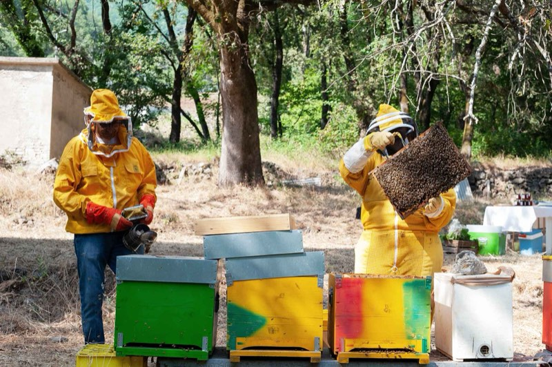
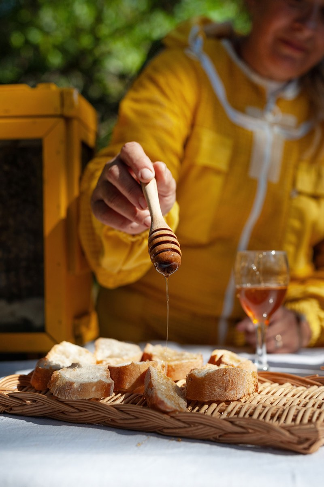
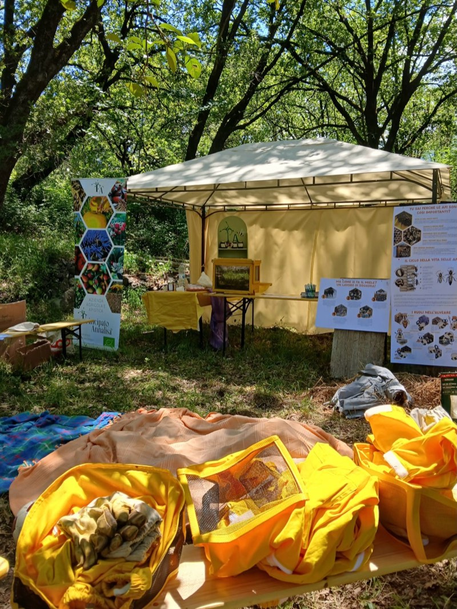
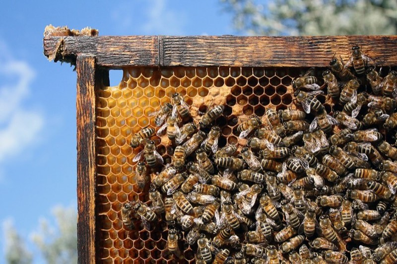

Nel regno delle api
Miele, favi e biodiversità raccontati da Annalisa: due ore tra le arnie, nelle campagne di Sant'Alessio in Aspromonte.
Adatta anche ai bambini: sono già venuti famiglie e un gruppo scout.

Che cosa si fa
Si visitano le arnie insieme a chi le cura e si osserva da vicino la vita dell'alveare, tra danze, favi e profumi di resina. Si impara a riconoscere le piante spontanee che rendono unico ogni miele del territorio.
Dalla fioritura al vasetto: un viaggio tra natura e sapere antico, per entrare in contatto con un ecosistema prezioso.
- Quanto duradue ore.
- Dovenelle campagne di Sant'Alessio in Aspromonte.
- La degustazioneguidata, di miele, polline e propoli.
- Da portare a casauna confezione di miele prodotto in azienda, per ogni partecipante.

Apicoltori per un giorno
In azienda sono venuti bambini con i loro genitori e un gruppo scout: hanno osservato le api da vicino, scoperto i ruoli della regina e delle operaie e assaggiato il miele direttamente dal favo.



Come si prenota
Scrivici per una data. L'esperienza fa parte del progetto Feel Aspromonte del Comune di Sant'Alessio in Aspromonte: si può prenotare anche tramite la Cooperativa di Comunità Radici d'Aspromonte.